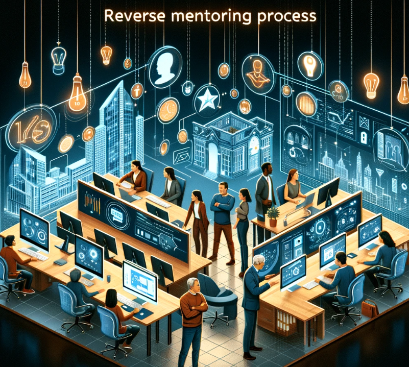

Employing V3, JavaScript with Plotly to examines global trends, linking population size and growth with GDP levels and growth, using World Bank data to compare countries on these economic indicators.
Employing Apache Spark and machine learning, this project forecasts fish catch rates in Alaska, enhancing efficiency and sustainability in the fishing sector. Advanced analytics predict the most productive fishing areas, optimizing seasonal operations.

Exploring how a country's climate influences its economy and the behaviors of its citizens through world bank's world-development-indicators.
Mechanisms and new avenues for retention by utilizing new technologies with MOOCs, intrepreneurship, reverse mentoring to improve organizational performance and employee satisfaction in the Gen-Z workforce.
Built a text classifier using neural networks and NLP, employing FastText's pre-trained embeddings for enhanced accuracy. Achieving a notable 0.9224 accuracy on test data, it demonstrates effective model training and data preparation methodologies.
Created a standardized GitHub repository for the COMET lab to handle more projects, ensure quality, simplify tasks, monitor progress, ease transitions, enhance understanding, and developed a website for training on repository use and communication.

The Mentoring System Database aims to boost productivity and effectiveness in mentoring, improve mentor-mentee relationships, track program progress, and link mentoring efforts to employee rewards for better engagement.
Utilizing crowdsourcing through Mechanical Turk enhances research on visual data understanding, making it cost-effective, rapid, and diverse. This approach facilitates the creation of clearer, more engaging visuals and improves data analysis accuracy.
Naive Bayes offers a straightforward approach for classifying diverse data types, from emails to fisheries data, highlighting simplicity and efficiency despite its limitations.